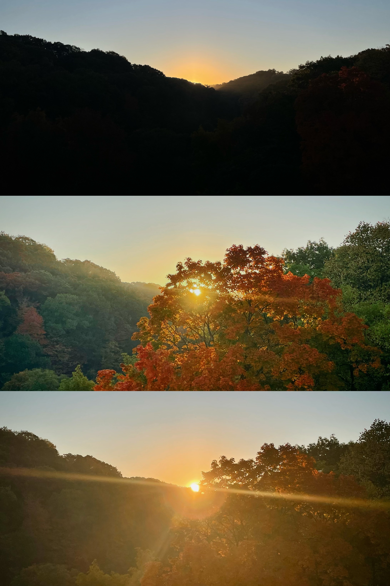
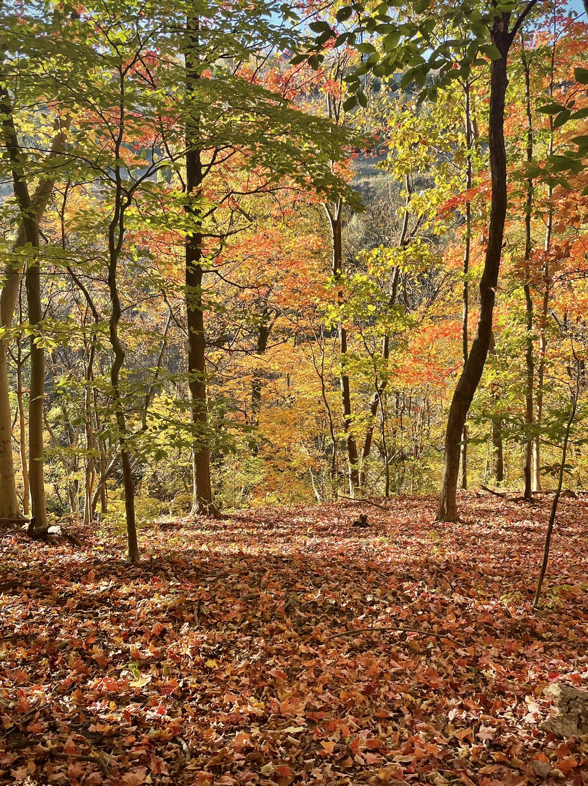

我很怕一个意象，乃“噪”
倘若我喜欢森林，我就应该在任何季节都喜欢它，不是吗？可为什么到了冬天我就不喜欢了呢？
难道说我喜欢的其实是光，森林是我偏爱的欣赏光的媒介？而匹兹堡的冬天没有光，这正是问题的核心：
没有光时，无论我靠近哪种欣赏光的媒介，定然都是无用的。我想这一解释有一定道理。光秃秃的枝丫并不是导致我厌恶冬日森林的根本原因。
想象一番Golden Hour光的射线让所有树干和枝丫的同一侧被点亮 —— 必定会引得我十分欢喜。
雪后的森林是另一个例子。有了雪地的反光，我将不再需要日光的增色。
我可以清晰地在脑中构建最令我难过的，“忧郁之冬”的典型图景：灰色调的天空如定音鼓一般一下子掌控了万物的基调 ——
是无论如何都逃不开Gloomy了。当然，我很想拥有能力破除这该死的定音鼓过度的强势。这很适合单开一个课题来思考它。
说回典型图景，灰色天空之下本不独自可爱的事物现在变得“可憎”了。例如混合着枯枝烂叶和泥土的地面，没有任何优秀的texture，没有颜色，没有生气，
也没有能力作为背景板反衬出任何事物的任何积极的品质。我忽然意识到我讨厌的图景跟我讨厌的人有着一模一样的特质：不仅无用，而且添乱，不仅枯燥，
而且还阻碍我的注意力去往不枯燥的地方。啊这是多么悲哀的一种存在！我感到此刻我心中的Hate冲到了峰值 ——
那是过去三个严冬我尚未安放妥当的怨声载道，无可奈何的长叹，滋生的浓稠的恨。如今我意识到这恨的对象不是什么具体事物，而是一类抽象的品质。
具有上述特质的事物皆令我唯恐避之不及。我想这等浓稠的恨必定关联到我的一个vulnerability，否则我并不会产生如此强烈的情绪。
这个vulnerability来自我对失去平静的恐惧。我很怕一个意象（我用”意象“这个词是因为我暂时还想不出什么其他更恰当的名词），乃“噪”。或许“躁”也同样适用。
它在我脑中的形象就是民间恶鬼传说中丑陋恶鬼的形象。它像土匪一般掠夺我的土地，我的平静之地。而每当这土匪来劫掠时，我的确如同手无寸铁的平民百姓面对侵略者时的境况一样束手无策。
而我这种任人宰割的状态产生的无力感，又持续喂养着我心中对土匪的恨。于是这恨囊括两个层面：原始的，对掠夺者的恨；以及对毫无招架之力的自己的无可奈何。
至于这第二层是如何产生的，我有必要进行下一步思考。显然我体会到了一个期待：期待自己应该有抵抗力，甚至应该有预判土匪入侵并施加防御措施的能力。
然后，一旦我感受到这层期待，我必然会进行反驳：我时至今日依旧遭到入侵，不是因为我没有抵抗/预判/防御力，而是土匪的综合实力总是领先于我的现有实力。
当然这也不代表我进步缓慢或低效，而是因为我身处的空间就是一个遍布高难度土匪的空间。
我与人沟通时常见的一个模式，是我反复强调我遇到的困境的难度。因为我不愿听到浮于表面的建议，那些建议仿佛在把我当成一个不会应变，不会从经验中学习的傻瓜。
啊！甚至可以说，给我这些建议的人，本身就是“噪”的一员！
我似乎得到了一个不得了的领悟：告诉我如何打土匪的人当中，有不少本来就是土匪。啊！！土匪的面目可憎忽然在我脑中挥之不去。
有多少时刻，我在感受着“噪”的期待，关于我该如何抵抗和防御“噪”期待。而我接受了这种期待进入我的身体，尽管它完全不了解实际情况。
我要为自己锻造两样武器：1. 一双能更快速辨认是人是妖的火眼金睛，2. 一个驱妖的习俗。
第一样武器的功用和重要性不言自明。我只需强调一个重点：“噪”可以附着在任何人身上。即便一个人以往是好人，或大部分时间是好人，当TA被“噪”附着，即可成妖。
这一变化可逆。当TA做妖的这段时间，若我与之接触，我也需迅速将TA辨认为妖。这也许是我当下的薄弱之处。我想到了过去很多时刻，我其实遇上了妖，但却没有辨认出来，
导致我不明白是什么忽然让我不适。又或是我辨认出了曾经的好人目前有妖附着，却不愿相信自己的辨认结果，因为我担心一旦自己心中为某人打上了妖的标签，TA就不会变回好人了。
总之，人与妖之间的流动性带来的启示：一日为妖，不代表终生为妖。我应当允许所有人在某些时日成妖，因为我自己也肯定在某些时日成为别人眼中的妖。
第二步，驱妖习俗。我想到这点原是由自一个可爱的类比。农历春节放爆竹贴窗花等习俗，是为了吓跑一个名为“年”的兽。那么我也要拥有习俗，来吓跑我讨厌的名为“噪”的妖。
民间神话中，年兽有三怕：巨响，红色和火光。那么噪妖怕什么呢？
第一怕必定是“止语”。我联想到了佛教中的闭口禅。当然我并不想真的修闭口禅，那样我干脆入佛门，还在这书写古灵精怪的思绪做啥。
我对止语的期待含义是：不主动initiate交谈。我想这应当是可以实现的！假若我只能回复他人的话，但不能主动发起对话or不能主动发起非必要的“日常闲聊”，我想这很合理！！
日常闲聊是噪妖最爱的食物。止语相当于断了它的粮呐。


曾经我是如此渴求一个声音能牵着我走一段路
秋假果然帮我restore了一部分“度假者心态”！这一周至少前半段天气保持无可挑剔地晴朗，
使我时刻都思索着去什么地方看看树，看看街道，看看小店或者教堂。
十月中下旬果然是匹兹堡的秋色鼎盛时期。我想吸尽秋阳。此时秋阳能给予我的能量不亚于暑假的加利福尼亚😃。
我开始光顾或计划光顾两年前的那个金秋曾踏足的地方：
Fifth Ave上的majestic tree；Regent Sq “the magnificent street corner”；Frick park砖砌的正门；Pino's restaurant 。。。
我知道现在的心境已变换许多。对于“同一环境不同心境将产生何种不同体验”的好奇驱使着我大量故地重游。
当然，我的确思索出赏秋的不少新花样。早起是最重要的元素之一。每日于拂晓出门，在咖啡的香气中看着天色一点一点地明亮，
我喜欢这种寂静时分我的思想却已然经历完它一天中最活跃的黄金期的“优越感”。
今天我确定了“噪妖”的第二怕 —— 无字歌。入秋以来，我播放纯音乐的比例明显增加，
我开始减化入耳的人声，如同我修剪我的信息摄入、以及边境管控我尤其重视的那个空间一样。
清晨的通勤时间是吸嗅晨雾的时间，同时用来拉长我的听觉，将它延伸至枝叶深处的鸟鸣。
这同样也是无字歌啊！为了对付噪妖，我要花一些心思来扩展我的无字歌单。
我好可怜两年前的自己，无时无刻不在惯性地戴上耳机 —— 并不全是因为周遭环境嘈杂，
而是因为我是如此渴求一个声音能牵着我走一段路，哪怕仅仅是从当前路口到下一个街角。。。想来也是呀，
我必须把我的思绪安扎在我身体之外的异乡，才能暂时凝固住我身体内汩汩流淌的忧伤。
若赠予与归还的巨轮着实在年复一年地滚动，那么将降临于我的各式崭新的东西，
想必会踏着令它们舒适的节拍，有序前来吧。

You walk ... crawl ... blunder through it
我想我过去两年经历的“松弛感”大约是低于均值两个标准差吧。我现在做的各种寻求松弛的举动，
表面上看似乎彰显着我是一个多么松弛的人。
然而不为人知的事实是，我此举恰恰诉说着我的生活里松弛是多么匮乏。我的目标从来就不是做个什么以松弛感著称的人。
我只希望将自己从距均值两个标准差的糟糕境地，往均值移一移。仅有这点小小的希望。
今年的秋我无时无刻不在对比中度过。仅仅是感受这种对比都会让我哭泣，随之而来的是感激。
我在不知不觉中爬过了一个泥沼。并且我有一个隐约的感受是：我也已经迈过这个泥沼的边缘。此刻我脚下除了坚硬一些的泥之外，应该还有更坚硬的陆地。
不像从前，脚下是会使人陷落的泥泞，再往下是漆黑笼罩的虚空。我不晓得我是怎么爬过来的。
今天看到同学在群里问关于背痛要做核磁检查的相关事宜，我顿感低落。
这低落的源头，不止是为她担心，也不止是为自己伤心，还有一种对自己某种“无知”的不适。
若有低年级的同学问我如何边应付背痛边念PhD，我没有办法提供建议。
或者说，若需要我给出一个smart answer，我只得承认我的无知。但我确有一个blunt answer，那就是move forward。
这是我去年hiking时俘获的智慧：当你不知道往哪儿走的时候就往前走。
当然我觉得我的这番坦白对一个尚未抽身泥沼，或更准确来说，一个将将踏入泥沼还在试图理解自己处于何种境地的人，
是尖刻且苦涩的，令人拒绝相信。
电影“泳者之心”里，黛比曾面临一片布满蛰人水母的海域。她问船上的教练应对方案是什么，教练答：没有方案，you swim through it。
这便是我所指的“无知”。我至今不知穿过泥沼的方案。
You walk ... crawl ... blunder through it.
我十分理解身处泥沼中的人几乎无法采取他人的任何建议。因为那些能说出口的建议，
哪一条不是那泥沼中的人屡次三番地想过并试过的？这大部分都是不能因地制宜的空壳建议。
就拿我信息过载这一困扰来举例。我固然知道我应屏蔽信息。可这样做会滋生担忧。担忧频频outweigh我承受信息过载时的痛苦，
于是我别无他择。从苦涩的结果来看，我是无何奈何的。
可置身我的处境一观便能察觉我其实一直在做最优的选择，只是在我的自信增长到能outweigh FOMO之前，我必然承受FOMO或信息过载两者之一。
现下我的自信逼近了能outweigh FOMO的地步，不过我还能看到一段不短的进步空间 —— 当前Twitter对我来说依旧是噪。
我羡慕Yonatan日常从twitter中掘取好物分发给我们，却不受其噪的扰乱。
今天我领悟了，正如我现在能从ins中掘取“匹兹堡Hidden Gems”却不觉得噪一样，将来我也一定能达到让Twitter尊循同种逻辑为我服务的境地。
虽然我看不清通往彼地的路，可我也不是第一次这样“无知”了。至少，我知道there is a blunt answer，且它过去未让我失望。

